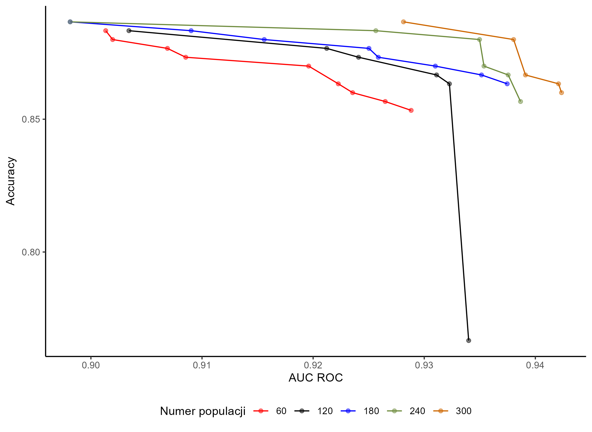
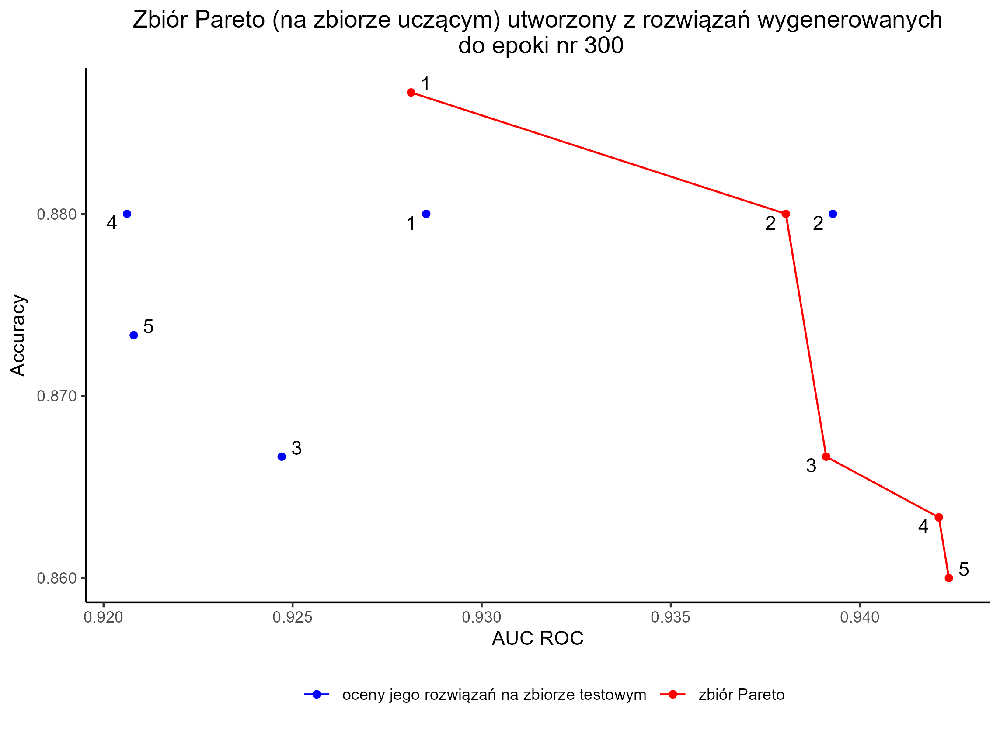
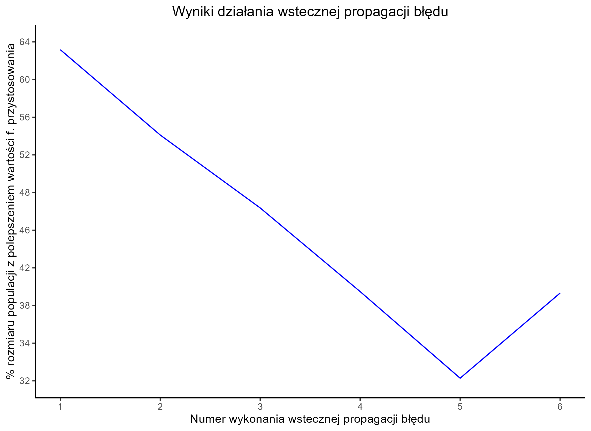
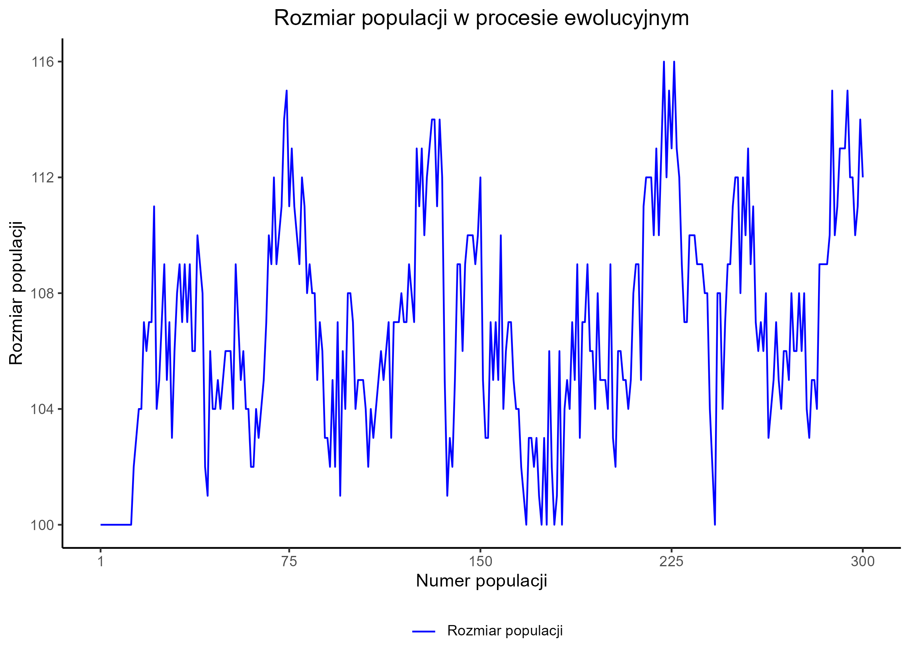
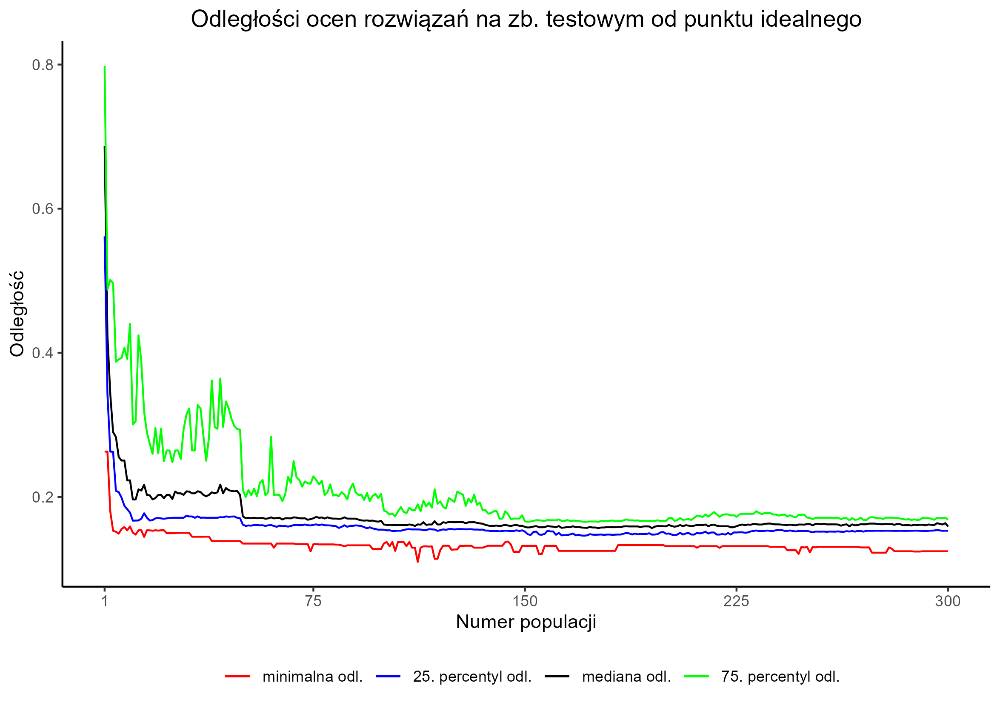
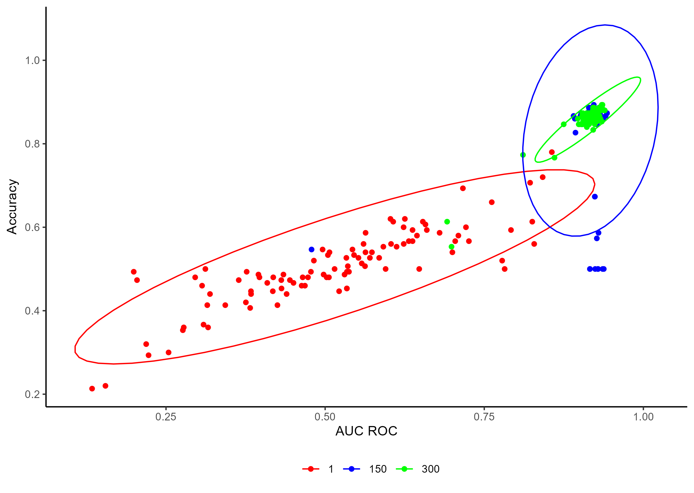

Materiały uzupełniające do rozprawy
Eksperyment nr 14
Australian Credit Approval
Konfiguracja eksperymentu
| Konfiguracja | konfiguracja |
|---|---|
| Rozdział z rozprawy | Eksperyment wstępny niezaprezentowany w rozprawie |
| Zbiór danych | Australian Credit Approval |
| Krótki opis eksperymentu | Ewolucja bez krzyżowania; mutacje oraz okresowe uczenie całej populacji. |
| liczba obserwacji | zbiór uczący: 300 (150 z każdej klasy)zbiór testowy: 150 (75 z każdej klasy)dodatkowe zbiory danych: 1 × 150 obserwacji; 75 z każdej klasy |
| Liczba epok | 300 |
| Kryterium | Ocena wielokryterialna oparta o:
|
| Ziarno generatora liczb losowych | 245105999 |
| Początkowa liczebność populacji | 100 |
| Liczba cech wejściowych | 43 |
| Maksymalna liczba warstw | 12 |
| Krzyżowanie | Wyłączone: CrossoverRate=0; adaptacja wyłączona. |
| Wsteczna propagacja błędu | Cała populacja co 50 epok, po 2 iteracje; uczenie po dodaniu/usunięciu warstwy wyłączone. |
Wybrana kompromisowa sieć neuronowa
| Epoka uzyskania osobnika | 112 |
|---|---|
| Identyfikator osobnika | 11752; unique_id=51 |
| Wizualizacja osobnika |
Oceny
Na zbiorze uczącym
- Trafność
- 0,860000 (*)
- F1-Score
- 0,859060
- AUC ROC
- 0,915044 (*)
Na zbiorze testowym
- Trafność
- 0,913333 (*)
- F1-Score
- 0,913907
- AUC ROC
- 0,932622 (*)
na dodatkowych danych (1 zbiór, 150 obserwacji)
- Trafność
- 0,880000 (*)
- F1-Score
- 0,880000
- AUC ROC
- 0,919467 (*)
(*) oznacza kryterium optymalizowane.
Wyniki eksperymentu





